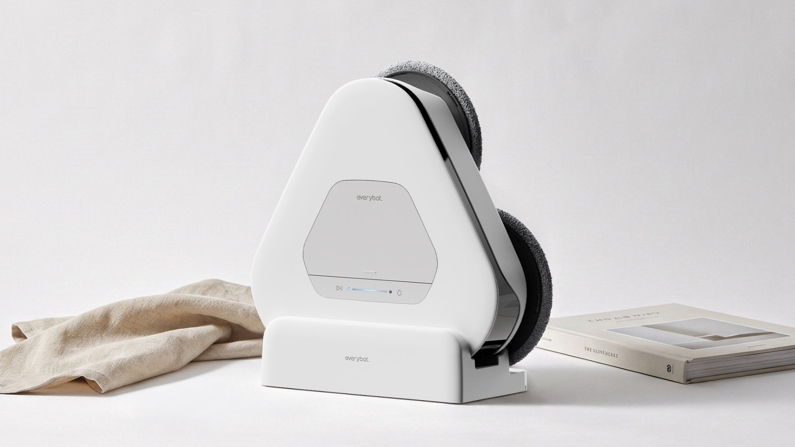
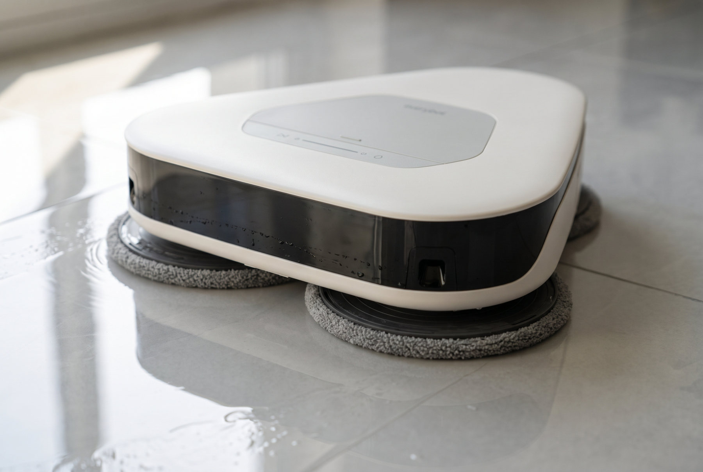
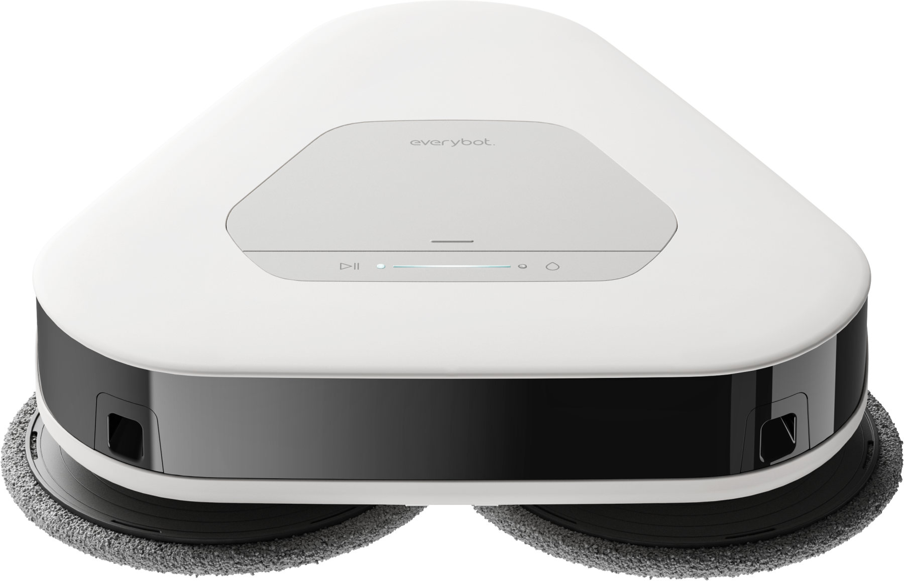
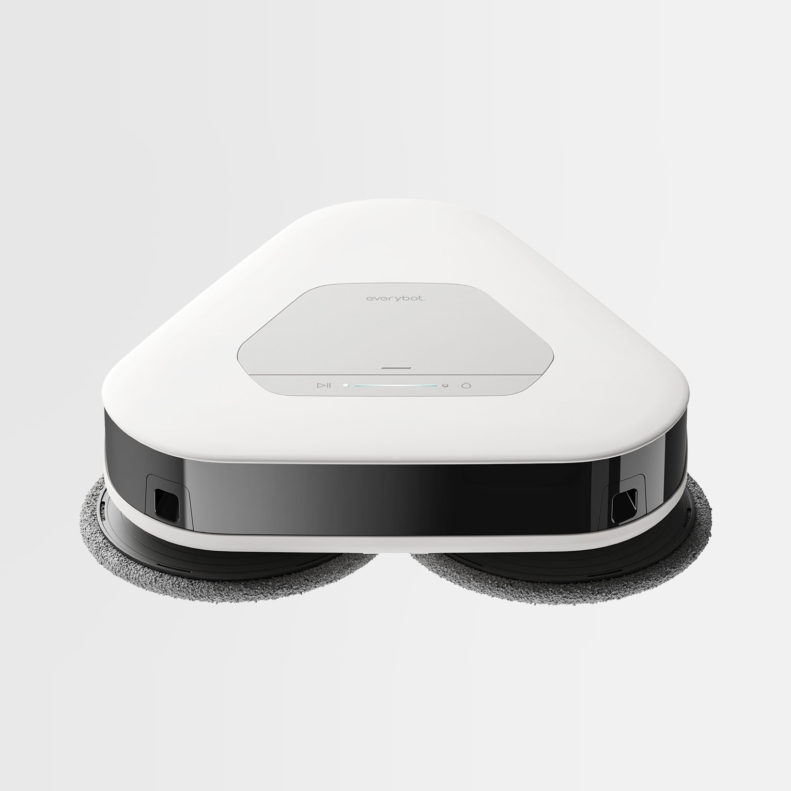
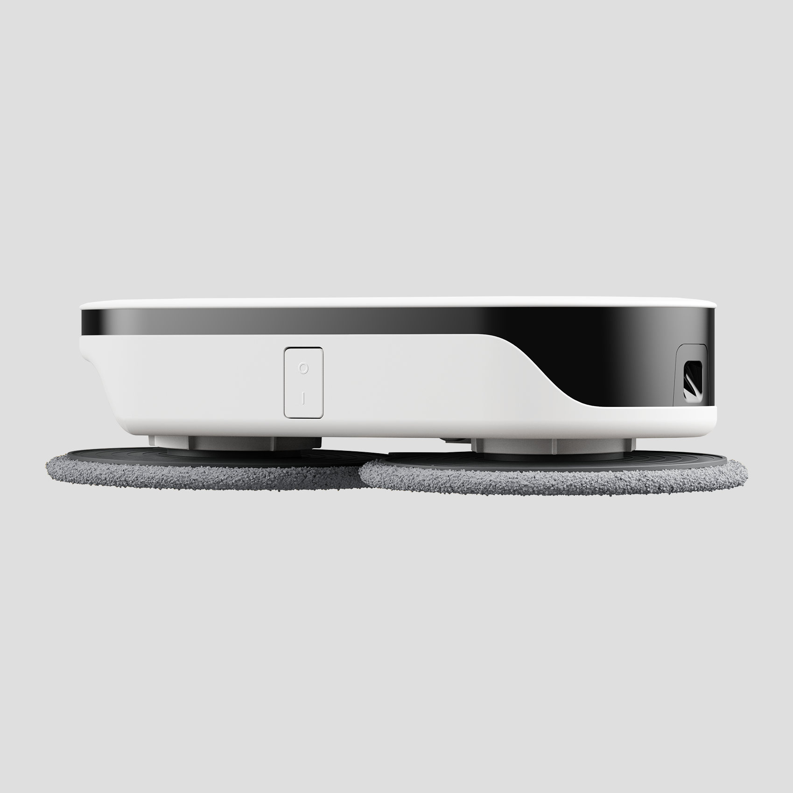
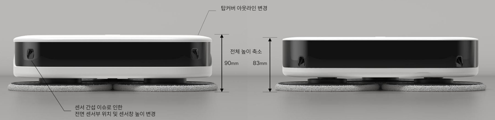
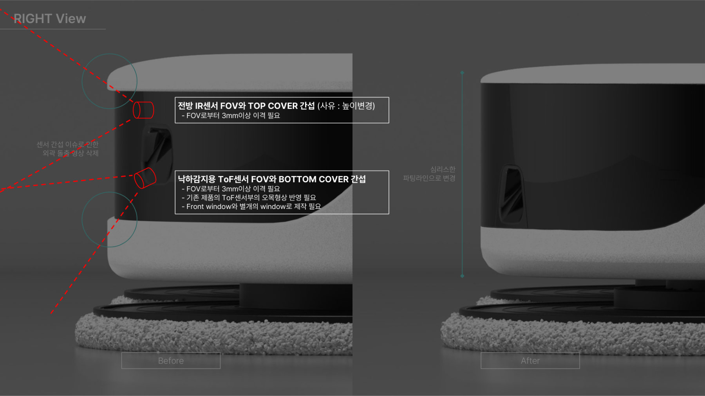
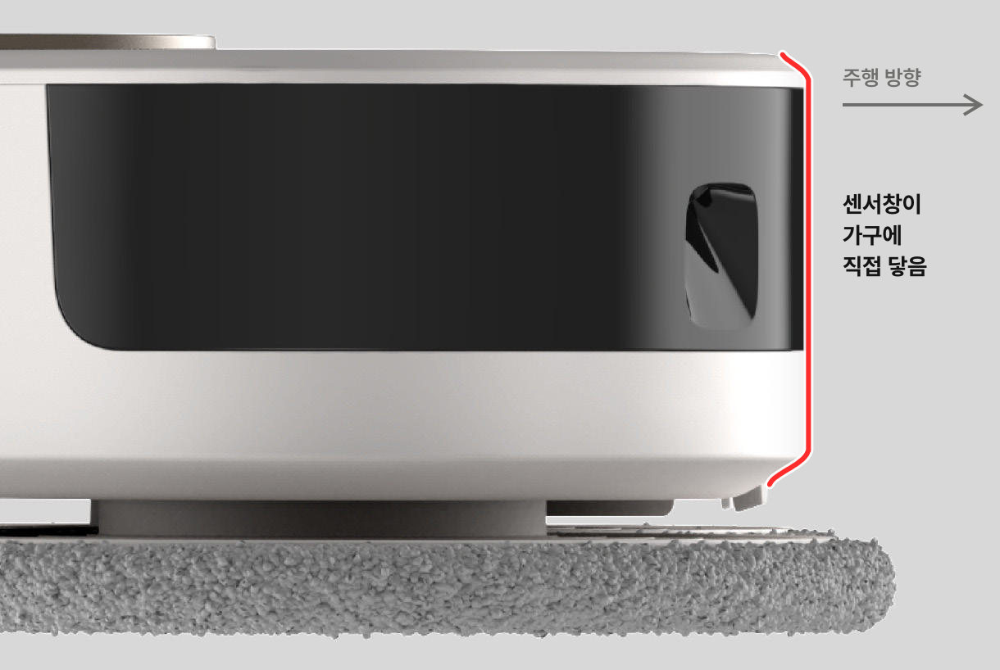
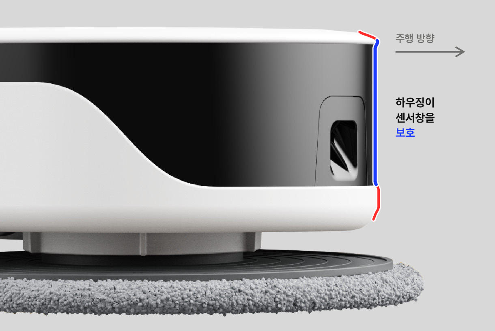
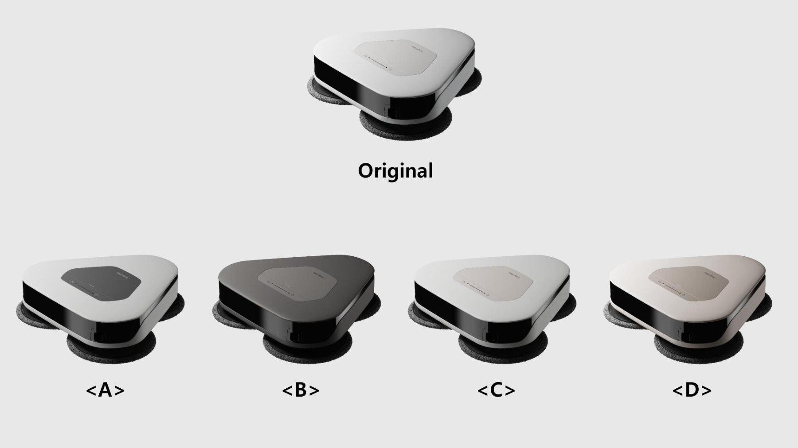

Rear Handle
Pain
뒤쪽 손잡이로 들 때 손이 큰 사용자는 손가락 관절이 회전판에 닿음(TS400 피드백)
Solution
회전판과 손잡이 사이의 높이·깊이를 다시 잡아 그립감 개선
에브리봇이 10년 이상 축적한 ROBO-SPIN 기술로 브랜드 역사상 가장 슬림하게 완성한 물걸레 로봇청소기입니다.

 2026.04
iF Design Award
2026 · Gold
2026.04
iF Design Award
2026 · Gold
 2026.04
Red Dot Award
Product Design 2026
2026.04
Red Dot Award
Product Design 2026
 2026.09
Good Design Korea
GD 선정
2026.09
Good Design Korea
GD 선정
A minimal object that settles into the room
낮은 바디로 소파·침대 아래까지 청소 범위를 넓히고, 오프 화이트 매트 마감과 심리스한 곡면으로 거실의 오브제처럼 자리하도록 디자인했습니다. 쓰리스핀 시리즈에서 가장 낮은 83mm 높이에, 버튼 2개와 라이트 라인, 음성 안내만으로 매뉴얼 없이 쓰도록 정리했습니다.
Built on the ROBO-SPIN technology Everybot has refined for more than ten years, Threespin Slim is the slimmest robot mop in the brand's history. Its low body reaches under sofas and beds, and an off-white matte finish with seamless curves lets it sit in the living room like an object rather than an appliance. At 83 mm it is the lowest model in the Threespin series, operated with two buttons, a light line and voice guidance.
이전 모델(TS400 등)의 사용자 피드백과 파손 사례를 분석해 디자인으로 풀 과제를 정했습니다.
Feedback and failure cases from previous models defined the design tasks.
Pain
뒤쪽 손잡이로 들 때 손이 큰 사용자는 손가락 관절이 회전판에 닿음(TS400 피드백)
Solution
회전판과 손잡이 사이의 높이·깊이를 다시 잡아 그립감 개선
Pain
LED가 상·하단으로 흩어져 있어 상태를 한눈에 알아보기 어려움
Solution
LED와 조작부를 한곳에 모아 인디케이터를 단순화
Pain
물통과 본체 사이 단차 때문에 덜 끼운 상태를 몰라, 래치 작동 없이 강제로 빼다 파손되는 사례 다수
Solution
단차 없는 매립형으로 바꿔 '평평하게 맞아야 장착 완료'라는 어포던스 제공

#슬림 · #심리스 · #미니멀 — 세 가지 키워드로 형태를 정리했습니다. ROBO-SPIN 구조의 세 회전 패드 배치가 그대로 삼각형 외형으로 이어졌고, 다양한 R값으로 모서리를 다듬어 원형 로봇청소기와 다른 조형 언어를 만들었습니다.
The form was organised around three keywords: slim, seamless and minimal. The layout of the three rotating pads in the ROBO-SPIN structure carries straight into a triangular silhouette, and corners finished with varied radii give it a form language distinct from round robot vacuums.



이전 모델은 센서창이 하우징과 같은 면에 있어 가구에 직접 부딪혔고, 센서창과 가구에 스크래치가 생긴다는 VOC가 접수됐습니다. 상·하단 하우징을 센서창보다 바깥으로 내밀어 단차를 주어, 부딪혀도 하우징이 먼저 닿게 했습니다.
On the previous model the sensor window sat flush with the housing and hit furniture directly, and customers reported scratches on both. The upper and lower housings now step out beyond the sensor window, so the housing touches first.






본체를 360도로 두르는 블랙 센서창 라인이 시선을 가로로 이끕니다. 다양한 R값으로 다듬은 모서리가 원형 로봇청소기와 다른 인상을 만듭니다.
A black sensor-window line wraps the body through 360 degrees and leads the eye horizontally, while corners finished with varied radii set it apart from round robot vacuums.

상단부 두께를 최소화하고 측면 라인이 바닥으로 흘러내리도록 처리해 바닥에 밀착된 인상을 줍니다. 디자인 확정 뒤 상면의 IR 센서를 측후면으로 옮기는 설계 변경이 생겨 360° 센서창 라인이 무너질 상황이었습니다. 센서 감지 각도(FOV)와 최소 손잡이 깊이를 먼저 기구팀과 확인하고, 그 조건 안에서 손잡이·상면 곡률·센서창 비율을 다시 조정해 실물 목업으로 검증했습니다. 센서 기능과 이 라인을 모두 지킨 형상으로 양산했습니다.
The top is kept as thin as possible and the side line flows down to the floor, so the robot looks pressed to the ground. After the design freeze, the IR sensor had to move from the top to the rear side, which threatened the 360° sensor-window line. The sensor's field of view and the minimum handle depth were confirmed with the mechanical team first; within those limits the handle, top curvature and sensor-window proportions were re-balanced and checked on full-scale mock-ups, so both the sensor and the line reached mass production.


초기 시안 뒤 내부 설계를 반영해 두 차례 수정했습니다. 1차에서는 물통·파워 버튼 배치에 맞춰 형상을 고치고, 전방 IR 센서와 낙하 감지 ToF 센서의 FOV에서 3mm 이상 떨어지도록 외곽 돌출 형상을 없애 심리스한 파팅라인으로 바꾸며 전체 높이를 90mm에서 83mm로 낮췄습니다. 2차에서는 기구 설계를 다시 검토해, 센서창을 보호하는 상·하판 형상처럼 최초 디자인의 핵심 요소를 되살렸습니다.
Two rounds of changes absorbed the internal design: sensor FOV clearance, a seamless parting line and a 90 → 83 mm height, then the key elements of the first design were restored.


센서창 보호 단차와 함께, 크래들에 거치할 때도 센서창이 크래들에 직접 닿는 면을 없애 스크래치를 막았습니다. 위 왼쪽이 이전 모델, 오른쪽이 TS450입니다.
Besides the protective step, the cradle was shaped so that no surface touches the sensor window when the robot is docked. Left: previous model. Right: TS450.


구동 바퀴 없이 세 개의 회전 패드만으로 이동과 청소를 동시에 수행합니다. 본체 무게가 세 패드에 실려 바닥을 눌러 닦습니다.
With no drive wheels, three rotating pads both move the robot and clean; the body's weight presses the pads to the floor.
시작·정지와 물 공급량 버튼 2개, 작동 상태를 알리는 라이트 라인, 음성 안내만으로 매뉴얼 없이 조작합니다.
Two buttons for start/stop and water flow, a light line for status and voice guidance: no manual needed.

세 개의 회전 패드는 손쉽게 탈착·세탁할 수 있고, 세탁해 반복 사용할 수 있습니다.
The three rotating pads detach easily and can be washed and reused.

본체를 세워 결합하는 수직형 거치대로 보관 면적을 줄였습니다. 거치대도 본체와 같은 곡면·컬러·마감으로 통일해 보관 중에도 하나의 오브제로 읽힙니다.
A vertical cradle that holds the robot upright reduces the storage footprint. The cradle shares the body's curves, colour and finish, so the two read as one object even in storage.

출시 뒤 후속 컬러 4안(White & Dark Gray · Warm Gray Tone on Tone · White & Beige · Beige & Dark Beige)을 도장 목업용으로 제안했습니다. 물통이 증착 마감이라 레진은 밝은 색만 쓸 수 있어 어두운 색은 도장으로 풀고, 자사·업체 보유 레진을 활용해 납기를 지키는 조건 안에서 정리했습니다.
Four follow-up colourways were proposed for painted mock-ups within resin and lead-time constraints.


1:1 디자인 목업을 제작해 비율 · 센서창 라인 · 다양한 CMF 시안을 검토했습니다. 시사출 단계에서는 플로우 마크 등의 품질 검수를 진행하고, 일부 금형 수정 등 양산 팔로우업을 진행했습니다.
Full-scale design mock-ups were built to review proportion, the sensor-window line and a range of CMF options. At the trial-injection stage, quality issues such as flow marks were inspected and mass-production follow-up included partial mould changes.
iF 디자인 어워드 2026에서 출품작 10,003개 중 상위 0.75%에게 주는 Gold를 받았습니다. 최종 심사 점수는 340/500점(수상 기준 275점)이고, 심사위원단은 “눈에 띄지 않으면서도 언제나 제 역할을 해내는 제품”이라고 평가했습니다. 이어 레드닷 디자인 어워드 본상과 굿디자인(GD)에도 선정되었습니다.
TS450 won an iF DESIGN AWARD 2026 Gold, given to 0.75% of 10,003 entries, with a final jury score of 340/500 (winner threshold 275). The jury called it “unobtrusive yet always gets the job done.” It also received a Red Dot Award: Product Design 2026 and Good Design Korea selection.